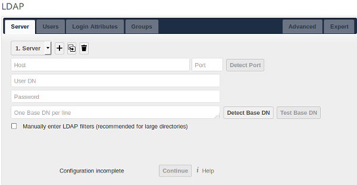
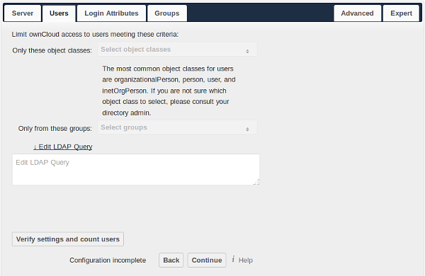
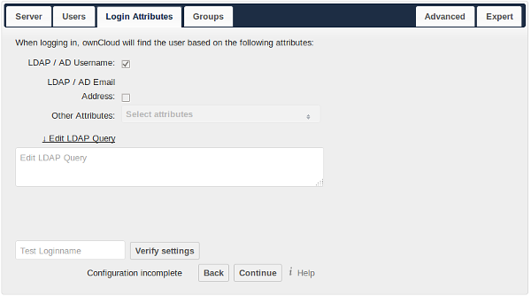
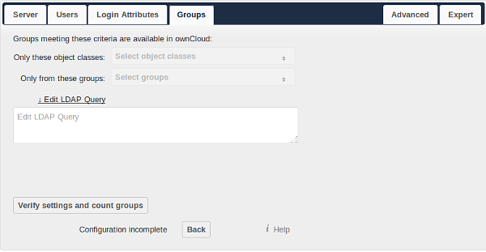
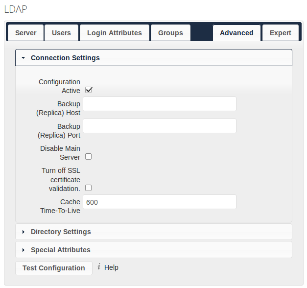
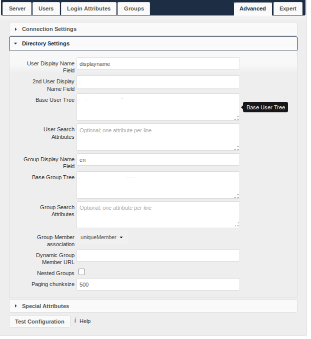
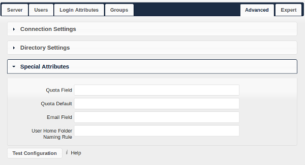
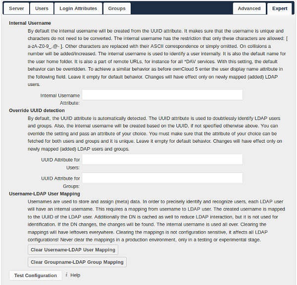
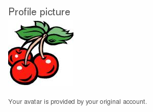

User Authentication with LDAP¶
Warning
Please check both the advanced and expert configurations carefully before using in production
ownCloud ships with an LDAP application which allows LDAP users (including Active Directory) to appear in your ownCloud user listings. These users will authenticate to ownCloud with their LDAP credentials, so you don’t have to create separate ownCloud user accounts for them. You will manage their ownCloud group memberships, quotas, and sharing permissions just like any other ownCloud user.
Note
The PHP LDAP module is required. It is supplied by php7.1-ldap on Debian/Ubuntu and php-ldap on CentOS/Red Hat/Fedora. Please check for the correct version, based on your installation of PHP.
The LDAP application supports:
- LDAP group support
- File sharing with ownCloud users and groups
- Access via WebDAV and ownCloud Desktop Client
- Versioning, external Storage and all other ownCloud features
- Seamless connectivity to Active Directory, with no extra configuration required
- Support for primary groups in Active Directory
- Auto-detection of LDAP attributes such as base DN, email, and the LDAP server port number
- Only read access to your LDAP (edit or delete of users on your LDAP is not supported)
Warning
The LDAP app is not compatible with the User backend using remote
HTTP servers app. You cannot use both of them at the same time.
Note
A non-blocking or correctly configured SELinux setup is needed for the LDAP backend to work. Please refer to the SELinux Configuration.
Configuration¶
First, enable the LDAP user and group backend app on the Apps page in ownCloud.
Then, go to your Admin page to configure it.
The LDAP configuration panel has four tabs.
A correctly completed first tab (“Server”) is mandatory to access the other tabs.
A green indicator lights when the configuration is correct.
Hover your cursor over the fields to see some pop-up tooltips.
Server Tab¶
Start with the Server tab. You may configure multiple servers if you have them. At a minimum you must supply the LDAP server’s hostname. If your server requires authentication, enter your credentials on this tab. ownCloud will then attempt to auto-detect the server’s port and base DN. The base DN and port are mandatory, so if ownCloud cannot detect them you must enter them manually.

- Server configuration:
- Configure one or more LDAP servers. Click the “Delete Configuration” button to remove the active configuration.
- Host:
The host name or IP address of the LDAP server. It can also be an ldaps:// URI. If you enter the port number, it speeds up server detection.
Examples:
directory.my-company.comldaps://directory.my-company.comdirectory.my-company.com:9876
- Port:
The port on which to connect to the LDAP server. The field is disabled in the beginning of a new configuration. If the LDAP server is running on a standard port, the port will be detected automatically. If you are using a non-standard port, ownCloud will attempt to detect it. If this fails you must enter the port number manually.
Example:
389
- User DN:
The name as DN of a user who has permissions to do searches in the LDAP directory. Leave it empty for anonymous access. We recommend that you have a special LDAP system user for this.
Example:
uid=owncloudsystemuser,cn=sysusers,dc=my-company,dc=com
- Password:
- The password for the user given above. Empty for anonymous access.
- Base DN:
The base DN of LDAP, from where all users and groups can be reached. You may enter multiple base DNs, one per line. Base DNs for users and groups can be set in the Advanced tab. This field is mandatory. ownCloud attempts to determine the Base DN according to the provided User DN or the provided Host, and you must enter it manually if ownCloud does not detect it.
Example:
dc=my-company,dc=com
User Filter¶
Use this to control which LDAP users are listed as ownCloud users on your ownCloud server. In order to control which LDAP users can login to your ownCloud server use the Login filter. Those LDAP users who have access but are not listed as users (if there are any) will be hidden users. You may bypass the form fields and enter a raw LDAP filter if you prefer.

- Only those object classes:
- ownCloud will determine the object classes that are typically available for user objects in your LDAP. ownCloud will automatically select the object class that returns the highest amount of users. You may select multiple object classes.
- Only from those groups:
- If your LDAP server supports the
memberof-overlayin LDAP filters, you can define that only users from one or more certain groups are allowed to appear in user listings in ownCloud. By default, no value will be selected. You may select multiple groups.
Note
Group membership is configured by adding memberUid, uniqueMember or
member attributes to an ldap group (see Group Member association) below. In order to efficiently look up the
groups a user who is a member of the LDAP server must support
a memberof-overlay. It allows using the virtual memberOf or
isMemberOf attributes of an LDAP user in the user filter. If your LDAP
server does not support the memberof-overlay in LDAP filters, the input
field is disabled. Please contact your LDAP administrator.
- Active Directory uses memberOf and is enabled by default.
- OpenLDAP uses
memberOf. Reverse Group Membership Maintenance needs to be enabled. - Oracle uses isMemberOf and is enabled by default.
- Edit raw filter instead:
Clicking on this text toggles the filter mode and you can enter the raw LDAP filter directly. Example:
(&(objectClass=inetOrgPerson)(memberOf=cn=owncloudusers,ou=groups,dc=example,dc=com))
- x users found:
- This is an indicator that tells you approximately how many users will be listed in ownCloud. The number updates automatically after any changes.
Login Filter¶
The settings in the Login Filter tab determine which LDAP users can log in to your ownCloud system and which attribute or attributes the provided login name is matched against (e.g., LDAP/AD username, email address). You may select multiple user details. You may bypass the form fields and enter a raw LDAP filter if you prefer.
You may override your User Filter settings on the User Filter tab by using a raw LDAP filter.

- LDAP Username:
- If this value is checked, the login value will be compared to the username in the LDAP directory.
The corresponding attribute, usually
uidorsamaccountnamewill be detected automatically by ownCloud. - LDAP Email Address:
- If this value is checked, the login value will be compared to an email address in the LDAP directory; specifically, the
mailPrimaryAddressandmailattributes. - Other Attributes:
- This multi-select box allows you to select other attributes for the comparison. The list is generated automatically from the user object attributes in your LDAP server.
- Edit raw filter instead:
Clicking on this text toggles the filter mode and you can enter the raw LDAP filter directly.
The
%uidplaceholder is replaced with the login name entered by the user upon login.Examples:
only username:
(&(objectClass=inetOrgPerson)(memberOf=cn=owncloudusers,ou=groups,dc=example,dc=com)(uid=%uid)
username or email address:
((&(objectClass=inetOrgPerson)(memberOf=cn=owncloudusers,ou=groups,dc=example,dc=com)(|(uid=%uid)(mail=%uid)))
Group Filter¶
By default, no LDAP groups will be available in ownCloud. The settings in the group filter tab determine which groups will be available in ownCloud. You may also elect to enter a raw LDAP filter instead.

- Only those object classes:
- ownCloud will determine the object classes that are typically available for group objects in your LDAP server.
ownCloud will only list object classes that return at least one group object.
You can select multiple object classes.
A typical object class is
group, orposixGroup. - Only from those groups:
- ownCloud will generate a list of available groups found in your LDAP server. From these groups, you can select the group or groups that get access to your ownCloud server.
- Edit raw filter instead:
Clicking on this text toggles the filter mode and you can enter the raw LDAP filter directly.
Example:
objectClass=groupobjectClass=posixGroup
- y groups found:
- This tells you approximately how many groups will be available in ownCloud. The number updates automatically after any change.
Advanced Settings¶
The LDAP Advanced Setting section contains options that are not needed for a working connection. This provides controls to disable the current configuration, configure replica hosts, and various performance-enhancing options.
The Advanced Settings are structured into three parts:
- Connection Settings
- Directory Settings
- Special Attributes
Connection Settings¶

- Configuration Active:
- Enables or Disables the current configuration. By default, it is turned off. When ownCloud makes a successful test connection it is automatically turned on.
- Backup (Replica) Host:
If you have a backup LDAP server, enter the connection settings here. ownCloud will then automatically connect to the backup when the main server cannot be reached. The backup server must be a replica of the main server so that the object UUIDs match.
Example:
directory2.my-company.com
- Backup (Replica) Port:
The connection port of the backup LDAP server. If no port is given, but only a host, then the main port (as specified above) will be used.
Example:
389
- Disable Main Server:
- You can manually override the main server and make ownCloud only connect to the backup server. This is useful for planned downtimes.
- Turn off SSL certificate validation:
- Turns off SSL certificate checking. Use it for testing only!
- Cache Time-To-Live:
A cache is introduced to avoid unnecessary LDAP traffic, for example caching usernames so they don’t have to be looked up for every page, and speeding up loading of the Users page. Saving the configuration empties the cache. The time is given in seconds.
Note that almost every PHP request requires a new connection to the LDAP server. If you require fresh PHP requests we recommend defining a minimum lifetime of 15s or so, rather than completely eliminating the cache.
Examples:
- Ten minutes:
600 - One hour:
3600
- Ten minutes:
See the Caching section below for detailed information on how the cache operates.
Directory Settings¶

- User Display Name Field:
The attribute that should be used as display name in ownCloud.
Examples:
displayNamegivenNamesn
- 2nd User Display Name Field:
An optional second attribute displayed in brackets after the display name, for example using the
mailattribute displays asMolly Foo (molly@example.com).Examples:
mailuserPrincipalNamesAMAccountName
- Base User Tree:
The base DN of LDAP, from where all users can be reached. This must be a complete DN, regardless of what you have entered for your Base DN in the Basic setting. You can specify multiple base trees, one on each line.
Examples:
cn=programmers,dc=my-company,dc=comcn=designers,dc=my-company,dc=com
- User Search Attributes:
These attributes are used when searches for users are performed, for example in the share dialogue. The user display name attribute is the default. You may list multiple attributes, one per line.
If an attribute is not available on a user object, the user will not be listed, and will be unable to login. This also affects the display name attribute. If you override the default you must specify the display name attribute here.
Examples:
displayNamemail
- Group Display Name Field:
The attribute that should be used as ownCloud group name. ownCloud allows a limited set of characters (
a-zA-Z0-9.-_@). Once a group name is assigned it cannot be changed.Examples:
cn
- Base Group Tree:
The base DN of LDAP, from where all groups can be reached. This must be a complete DN, regardless of what you have entered for your Base DN in the Basic setting. You can specify multiple base trees, one in each line.
Examples:
cn=barcelona,dc=my-company,dc=comcn=madrid,dc=my-company,dc=com
- Group Search Attributes:
These attributes are used when a search for groups is done, for example in the share dialogue. By default the group display name attribute as specified above is used. Multiple attributes can be given, one in each line.
If you override the default, the group display name attribute will not be taken into account, unless you specify it as well.
Examples:
cndescription
- Group Member association:
The attribute that is used to indicate group memberships, i.e., the attribute used by LDAP groups to refer to their users. ownCloud detects the value automatically. You should only change it if you have a very valid reason and know what you are doing.
Examples:
memberwith FDN for Active Directory or for objectclassgroupOfNamesgroupsmemberUidwith RDN for objectclassposixGroupgroupsuniqueMemberwith FDN for objectclassgroupOfUniqueNamesgroups
Note
The Group Member association is used to efficiently query users of a certain group, eg., on the userManagement page or when resolving all members of a group share.
- Dynamic Group Member URL
- The LDAP attribute that on group objects contains an LDAP search URL that determines what objects belong to the group. An empty setting disables dynamic group membership functionality. See Configuring Dynamic Groups for more details.
- Nested Groups:
- This makes the LDAP connector aware that groups could be stored inside existing group records. By default a group will only contain users, so enabling this option isn’t necessary. However, if groups are contained inside groups, and this option is not enabled, any groups contained within other groups will be ignored and not returned in search results.
- Paging Chunk Size:
- This sets the maximum number of records able to be returned in a response when ownCloud requests data from LDAP. If this value is greater than the limit of the underlying LDAP server (such as 3000 for Microsoft Active Directory) the LDAP server will reject the request and the search request will fail. Given that, it is important to set the requested chunk size to a value no larger than that which the underlying LDAP server supports.
Special Attributes¶

- Quota Field:
- The name of the LDAP attribute to retrieve the user quota limit from, e.g.,
ownCloudQuota. Note: any quota set in LDAP overrides quotas set in ownCloud’s user management page. - Quota Default:
- Override ownCloud’s default quota for LDAP users who do not have a quota set in the Quota Field, e.g.,
15 GB.
Please bear in mind the following, when using these fields to assign user quota limits. It should help to alleviate any, potential, confusion.
- After installation ownCloud uses an unlimited quota by default.
- Administrators can modify this value, at any time, in the user management page.
- However, when an LDAP quota is set it will override any values set in ownCloud.
- If an LDAP per/attribute quota is set, it will override the LDAP Quota Default value.
Note
Administrators are not allowed to modify the user quota limit in the user management page when steps 3 or 4 are in effect. At this point, updates are only possible via LDAP.
See the LDAP Schema for OwnCloud Quota
- Email Field:
- Set the user’s email from an LDAP attribute, e.g.,
mail. Leave it empty for default behavior.
- User Home Folder Naming Rule:
By default, the ownCloud server creates the user directory in your ownCloud data directory and gives it the ownCloud username, e.g.,
/var/www/owncloud/data/5a9df029-322d-4676-9c80-9fc8892c4e4b, if your data directory is set to/var/www/owncloud/data.It is possible to override this setting and name it after an LDAP attribute value, e.g.,
attr:cn. The attribute can return either an absolute path, e.g.,/mnt/storage43/alice, or a relative path which must not begin with a/, e.g.,CloudUsers/CookieMonster. This relative path is then created inside the data directory (e.g.,/var/www/owncloud/data/CloudUsers/CookieMonster).Since ownCloud 8.0.10 and up the home folder rule is enforced. This means that once you set a home folder naming rule (get a home folder from an LDAP attribute), it must be available for all users. If it isn’t available for a user, then that user will not be able to login. Also, the filesystem will not be set up for that user, so their file shares will not be available to other users. For older versions you may enforce the home folder rule with the
occcommand, like this example on Ubuntu:sudo -u www-data php occ config:app:set user_ldap enforce_home_folder_naming_rule --value=1
Since ownCloud 10.0 the home folder naming rule is only applied when first provisioning the user. This prevents data loss due to re-provisioning the users home folder in case of unintentional changes in LDAP.
Expert Settings¶

Warning
In the Expert Settings fundamental behavior can be adjusted to your needs. The configuration should be well-tested before starting production use.
- Internal Username:
The internal username is the identifier in ownCloud for LDAP users. By default it will be created from the UUID attribute. The UUID attribute ensures that the username is unique, and that characters do not need to be converted. Only these characters are allowed:
[\a-\zA-\Z0-\9_.@-]. Other characters are replaced with their ASCII equivalents, or are simply omitted.The LDAP backend ensures that there are no duplicate internal usernames in ownCloud, i.e., that it is checking all other activated user backends (including local ownCloud users). On collisions a random number (between 1000 and 9999) will be attached to the retrieved value. For example, if “alice” exists, the next username may be “alice_1337”.
The internal username is the default name for the user home folder in ownCloud. It is also a part of remote URLs, for instance for all *DAV services.
You can override all of this with the Internal Username setting. Leave it empty for default behavior. Changes will affect only newly mapped LDAP users.
Examples:
uid
- Override UUID detection
By default, ownCloud auto-detects the UUID attribute. The UUID attribute is used to uniquely identify LDAP users and groups. The internal username will be created based on the UUID, if not specified otherwise.
You can override the setting and pass an attribute of your choice. You must make sure that the attribute of your choice can be fetched for both users and groups and it is unique. Leave it empty for default behavior. Changes will have effect only on newly mapped LDAP users and groups.
It also will have effect when a user’s or group’s DN changes and an old UUID was cached, which will result in a new user. Because of this, the setting should be applied before putting ownCloud in production use and clearing the bindings (see the
User and Group Mappingsection below).Examples:
cn
- Username-LDAP User Mapping
ownCloud uses usernames as keys to store and assign data. In order to precisely identify and recognize users, each LDAP user will have a internal username in ownCloud. This requires a mapping from ownCloud username to LDAP user. The created username is mapped to the UUID of the LDAP user. Additionally the DN is cached as well to reduce LDAP interaction, but it is not used for identification. If the DN changes, the change will be detected by ownCloud by checking the UUID value.
The same is valid for groups. The internal ownCloud name is used all over in ownCloud. Clearing the Mappings will have leftovers everywhere. Never clear the mappings in a production environment, but only in a testing or experimental server.
Clearing the mappings is not configuration sensitive, it affects all LDAP configurations!
Testing the configuration¶
The “Test Configuration” button checks the values as currently given in the input fields. You do not need to save before testing. By clicking on the button, ownCloud will try to bind to the ownCloud server using the settings currently given in the input fields. If the binding fails you’ll see a yellow banner with the error message:
“The configuration is invalid. Please have a look at the logs for further details.”
When the configuration test reports success, save your settings and check if the users and groups are fetched correctly on the Users page.
Syncing Users¶
While users who match the login and user filters can log in, only synced users will be found in the sharing dialog. Whenever users log in their display name, email, quota, avatar and search attributes will be synced to ownCloud. If you want to keep the metadata up to date you can set up a cron job, using the occ command. Versions of ownCloud before 10.0 imported all users when the users page was loaded, but this is no longer the case.
We recommend creating a Cron job, to automate regularly syncing LDAP users with your ownCloud database.
How Often Should the Job Run?¶
This depends on the amount of users and speed of the update, but we recommend at least once per day. You can run it more frequently, but doing so may generate too much load on the server.
ownCloud Avatar integration¶
ownCloud supports user profile pictures, which are also called avatars.
If a user has a photo stored in the jpegPhoto or thumbnailPhoto attribute on your LDAP server, it will be used as their avatar.
In this case the user cannot alter their avatar (on their Personal page) as it must be changed in LDAP. jpegPhoto is preferred over thumbnailPhoto.

If the jpegPhoto or thumbnailPhoto attribute is not set or empty, then users can upload and manage their avatars on their ownCloud Personal pages.
Avatars managed in ownCloud are not stored in LDAP.
The jpegPhoto or thumbnailPhoto attribute is fetched once a day to make sure the current photo from LDAP is used in ownCloud. LDAP avatars override ownCloud avatars, and when an LDAP avatar is deleted then the most recent ownCloud avatar replaces it.
Photos served from LDAP are automatically cropped and resized in ownCloud. This affects only the presentation, and the original image is not changed.
Troubleshooting, Tips and Tricks¶
SSL Certificate Verification (LDAPS, TLS)¶
A common mistake with SSL certificates is that they may not be known to PHP. If you have trouble with certificate validation make sure that
- You have the certificate of the server installed on the ownCloud server
- The certificate is announced in the system’s LDAP configuration file, usually
/etc/ldap/ldap.conf.
- Using LDAPS, also make sure that the port is correctly configured (by default 636)
- If you get the error “Lost connection to LDAP server” or “No connection to LDAP server” double check the connection parameters and try connecting to LDAP with tools like
ldapsearch. If using ldaps or TLS make sure the certificate is readable by the user that is used to serve ownCloud.
Microsoft Active Directory¶
Compared to earlier ownCloud versions, no further tweaks need to be done to make ownCloud work with Active Directory. ownCloud will automatically find the correct configuration in the set-up process.
memberOf / Read MemberOf permissions¶
If you want to use memberOf within your filter you might need to give your querying user the permissions to use it.
For Microsoft Active Directory this is described here.
Duplicating Server Configurations¶
In case you have a working configuration and want to create a similar one or “snapshot” configurations before modifying them you can do the following:
- Go to the “Server” tab
- On “Server Configuration” choose “Add Server Configuration”
- Answer the question “Take over settings from recent server configuration?” with “yes”.
- (optional) Switch to “Advanced” tab and uncheck “Configuration Active” in the “Connection Settings”, so the new configuration is not used on Save
- Click on “Save”
Now you can modify and enable the configuration.
Performance tips¶
Caching¶
Using caching to speed up lookups. See Memory Caching. The ownCloud cache is populated on demand, and remains populated until the “Cache Time-To-Live” for each unique request expires. User logins are not cached, so if you need to improve login times set up a slave LDAP server to share the load.
You can adjust the “Cache Time-To-Live” value to balance performance and freshness of LDAP data. All LDAP requests will be cached for 10 minutes by default, and you can alter this with the “Cache Time-To-Live” setting. The cache answers each request that is identical to a previous request, within the time-to-live of the original request, rather than hitting the LDAP server.
The “Cache Time-To-Live” is related to each single request. After a cache entry expires there is no automatic trigger for re-populating the information, as the cache is populated only by new requests, for example by opening the User administration page, or searching in a sharing dialog.
There is one trigger which is automatically triggered by a certain background job which keeps the user-group-mappings up-to-date, and always in cache.
Under normal circumstances, all users are never loaded at the same time. Typically the loading of users happens while page results are generated, in steps of 30 until the limit is reached or no results are left. For this to work on an oC-Server and LDAP-Server, “Paged Results” must be supported, which assumes PHP >= 5.6.
ownCloud remembers which user belongs to which LDAP-configuration. That means each request will always be directed to the right server unless a user is defunct, for example due to a server migration or unreachable server. In this case the other servers will also receive the request.
LDAP indexing¶
Turn on indexing. Deciding which attributes to index depends on your configuration and which LDAP server you are using. See The openLDAP tuning guide for openLDAP, and How to Index an Attribute in Active Directory for Active Directory.
Use precise base DNs¶
The more precise your base DN, the faster LDAP can search because it has fewer branches to search.
Use precise filters¶
Use good filters to further define the scope of LDAP searches, and to intelligently direct your server where to search, rather than forcing it to perform needlessly-general searches.
ownCloud LDAP Internals¶
Some parts of how the LDAP backend works are described here.
User and Group Mapping¶
In ownCloud the user or group name is used to have all relevant information in the database assigned. To work reliably a permanent internal user name and group name is created and mapped to the LDAP DN and UUID. If the DN changes in LDAP it will be detected, and there will be no conflicts.
Those mappings are done in the database table ldap_user_mapping and ldap_group_mapping.
The user name is also used for the user’s folder (except if something else is specified in User Home Folder Naming Rule), which contains files and meta data.
As of ownCloud 5 the internal user name and a visible display name are separated. This is not the case for group names, yet, i.e., a group name cannot be altered.
That means that your LDAP configuration should be good and ready before putting it into production. The mapping tables are filled early, but as long as you are testing, you can empty the tables any time. Do not do this in production.
Handling with Backup Server¶
When ownCloud is not able to contact the main LDAP server, ownCloud assumes it is offline and will not try to connect again for the time specified in” Cache Time-To-Live”. If you have a backup server configured ownCloud will connect to it instead. When you have scheduled downtime, check “Disable Main Server” to avoid unnecessary connection attempts.